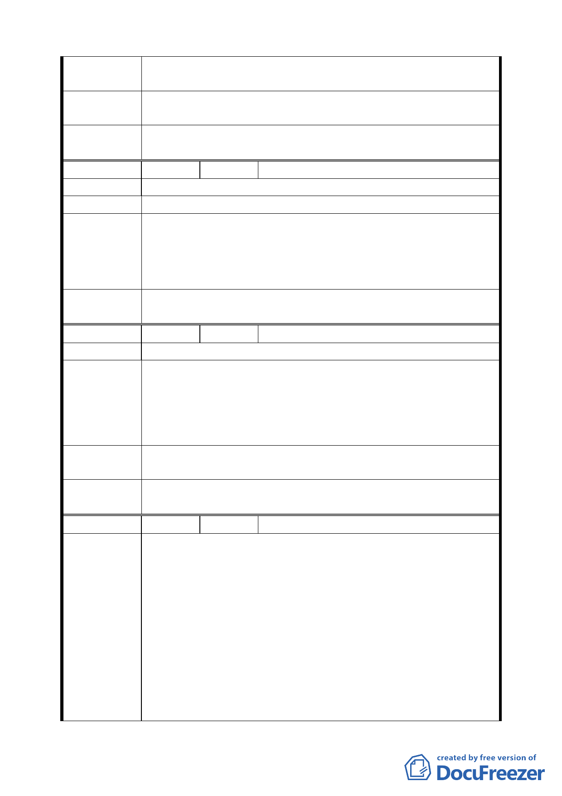

族街伸沿至溫泉路 68 巷一案，均請在此次通盤檢討都市計畫
時，將之取消。
專 案 小 組 94.3.3 專案小組第十一次審查會議：同意發展局建議維持原
結 論 計畫之迴車道。
委員會議
決議
同意依專案小組審查結論辦理。
編
號4
陳情人 中庸里楊里長萬生
陳 情 理 由 建議位置：北投區開明段二小段三一一地號。
建 議 辦 法 該地號道路用地變更為可建築用地。
94.3.3 專案小組第十一次審查會議：本案請發展局對該地區
專 案 小 組 相同狀況案例及參考委員意見對徵收、容積移轉等相關權益
結 論 再與陳情人溝通，並評估比較各方案費用後，提大會討論。
另亦請地政處說明該地公告現值。
委員會議
決議
維持原都市計畫，有關民眾意見請市府另行處理。
編
號5
陳情人 鄧芳男
陳 情 理 由 建議位置：北投區新民段二小段 180.181.184.185 地號。
一、上述毗鄰北投四十八號公園四筆土地全變更為公園用
地、並由市府徵收。
建 議 辦 法 二、或將 180.181 私有土地變更為公園用地，同時將市有 183
地號變更為第二種住宅區用地，用以辦理雙方交換土地
事宜，以彌補北投四十八號公園規劃闢設之嚴重錯誤。
專 案 小 組 93.7.15 專案小組第六次審查會議：建議變更為公園用地予以
結 論 徵收並保留既有巷道。
委員會議
決議
同意依專案小組審查結論辦理。
編
號6
陳情人 王國進等四人
建議位置：北投區開溫泉段一小段 47.47-1 地號。
建議理由：
一、47.47-1 地號，茲以取得台北市政府公私有畸零土地合併
使用證明書，與溫泉段一小段 39.39-5 地號部分土地合
併使用完成獨立開發性，且已經向公有土地所有權人：
陳情理由
台北市政府財政局管理者提出申購市有畸零地中。
二、民之 47.47-1 地號在民國 55 年就蓋有舊建築物面積為
1114.02 平方公尺，今與鄰地 50.51 地號土地相關地主等
人取得同意共同協議開發，將舊有建物拆除興建新住
宅，以改善市容。
上述總體基地內 47.39（部分）地號土地係位於實施“山坡地
第 三〇 頁，共 49 頁